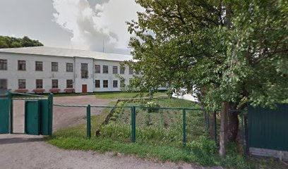
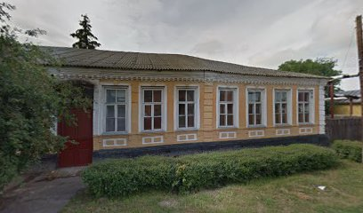
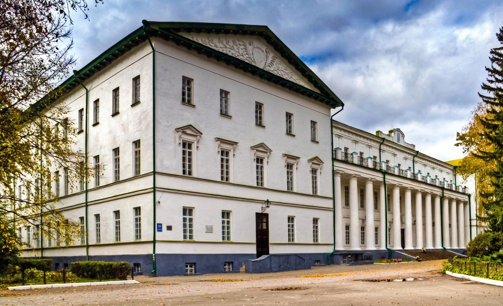
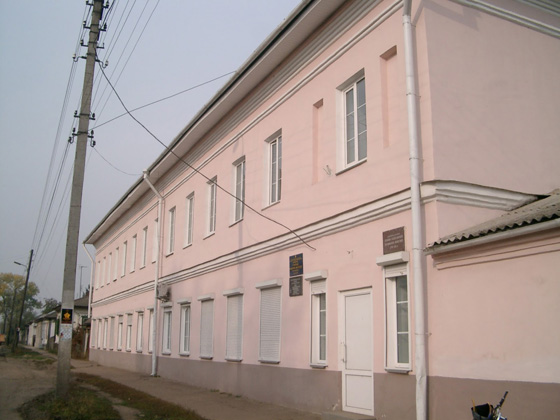

Школи
Ніжин – освітній і культурний центр регіону з давніми історичними традиціями.
У місті діє розгалужена система освітніх закладів, що крім дошкільних і загальноосвітніх (шкільних) включає низку закладів освіти нового типу, наприклад, як різні позашкільні заклади освіти. Також у місті можна здобути спеціальну і вищу освіту.
Дошкільна, шкільна і позашкільна освіта:
У Ніжині функціонує 14 дошкільних навчальних закладів, 3 ЗОШ І-ІІ ступенів (неповних), 14 ЗОШ І-ІІІ ступенів (повних), в тому числі і нового типу (гімназії, № 3 та 16)
Заклади спеціальної освіти:
Ніжинський професійний ліцей побуту і сервісу
Ніжинський професійний аграрний ліцей.
Вищі навчальні заклади:
Ніжинський державний університет ім. М. В. Гоголя
Ніжинський агротехнічний інститут Національного аграрного університету
Ніжинський медичний коледж
Ніжинський коледж культури і мистецтв ім. М. Заньковецької
У місті працюють драмтеатр ім.М.Коцюбинського, краєзнавчий музей, музей "Поштова станці", хореографічна школа, парк культури і відпочинку, центр дозвілля молоді, народні самодіяльні колективи. У будівлі Гоголівського корпусу університету діє картинна галерея, музей Миколи Гоголя та музей університету.
Ніжинська Гімназія № 3
Адреса: 16600, м. Ніжин, вул. Московська , 6-А тел. 7-19-13
Сайт: gymn3nizhyn.zzz.com.ua EMail: nizhyngimn3@gmail.com
Ніжинська Гімназія № 2
Адреса: 16600, м. Ніжин, вул. Шевченка, 56 тел 3-16-54
Сайт: zosh2-nizhyn.ucoz.ua EMail: nizhyn-zosh2@ukr.net
Ніжинська загальноосвітня школа І-ІІІ ступенів № 1
Адреса: 16600, м. Ніжин, вул. Гребінки, 4 тел. 2-34-67
Сайт: zosh1-nizhyn.at.ua EMail: zosh1-nizhyn@ukr.net
Ніжинська загальноосвітня школа І-ІІІ ступенів № 4
Адреса: 16600, м. Ніжин, вул. Козача, 22 тел. 2-33-73
Сайт: nizhyn-zosh4.cn.sch.in.ua EMail: zosh4.nizhyn@gmail.com
Ніжинська загальноосвітня школа І-ІІІ ступенів № 5
Адреса: 16600, м. Ніжин, вул. Воздвиженська,72. тел. 2-37-57
Сайт: zosh5-nizhyn.at.ua EMail: zosh5-nizhyn5@ukr.net
Ніжинська загальноосвітня школа І-ІІІ ступенів № 6
Адреса: 16600, м. Ніжин, вул.Мигалівська, 16 тел. 2-37-58
Сайт: zosh6-nizhyn.ucoz.net EMail: zosh6nizhyn@gmail.com
Ніжинська загальноосвітня школа І-ІІІ ступенів № 7
Адреса: 16600, м. Ніжин, вул. Гоголя, 15 тел. 2-31-62
Сайт: zosh7-nizhyn.ho.ua EMail: nizhyn.zosh07@gmail.com
Ніжинська загальноосвітня школа І-ІІІ ступенів № 9
Адреса: 16600, м. Ніжин, вул. Шевченка 103, 3-16-51
Сайт: zosh9-nizhyn.at.ua EMail: zosh9-nizhyn@ukr.net
Ніжинська загальноосвітня школа І-ІІІ ступенів № 10
Адреса: 16600, м. Ніжин, Московська, 54 тел. 4-15-27
Сайт: zosh10.ucoz.com EMail: nizhyn.zosh10@gmail.com
Ніжинська загальноосвітня школа І-ІІ ступенів № 11
Адреса: 16600, м. Ніжин, вул. Євлашівська, 73 тел. 2-37-37
Сайт: zosh11nizhyn.at.ua EMail: zosh11-nizhyn@ukr.net
Ніжинська загальноосвітня школа І-ІІ ступенів № 12
Адреса: 16600, м. Ніжин, вул. Франка, 22 тел. 2-37-32
Сайт: zosh12-nizhyn.at.ua EMail: zosh12nizhyn@gmail.com

Ніжинська загальноосвітня школа І-ІІІ ступенів № 13
Адреса: 16600, м. Ніжин, вул. Авдієвська, 227 тел. 7-03-61
Сайт: zosh13-nizhyn.org.ua EMail: zosh13.nizhyn13@gmail.com
Ніжинська гімназія № 14
Адреса: 16600, м. Ніжин, вул. Шекерогринівська, 52а, тел. 3-18-98
Сайт: zosh14nizhyn.ucoz.ua EMail: zosh14-nizhyn@ukr.net
Ніжинська загальноосвітня школа І-ІІІ ступенів № 15
Адреса: 16600, м. Ніжин, вул. Об’їжджа, 123 тел. 3-14-42
Сайт: school15-nizhyn.at.ua EMail: zosh15.nizhyn@ukr.net
Ніжинський навчально-виховний комплекс № 16 «Престиж» (гімназія - загальноосвітня школа І ступеня – дошкільний навчальний заклад)
Адреса: 16600, м. Ніжин, вул. 3-й мікрорайон, 11 тел. 3-12-03
Сайт: gimn16-nizhyn.at.ua EMail: nnvk16-nizhyn@ukr.net
Ніжинська загальноосвітня школа І-ІІІ ступенів № 17
Адреса: 16600, м. Ніжин, вул. Прилуцька,162 тел.: 2-67-85
Сайт: sch17-nizhyn.ucoz.ua EMail: zosh17-nizhyn@ukr.net
ВНЗ
Ніжинський державний університет імені Миколи Гоголя
Адреса: 16600, м. Ніжин, вул. Кропив'янського, 2, тел.: (04631) 2-43-07, (04631) 7-14-76, (04631) 7-19-22
Сайт: www.ndu.edu.ua EMail: ndu@ndu.edu.ua
Ніжинський агротехнічний інститут Національного аграрного університету
Адреса: 16600, м. Ніжин, вул. Шевченка, 10, тел.: (046) 312-52-70, (046) 312-31-30
Сайт: nati.org.ua/ EMail: natinau@ukr.net
Коледжі, училища
Відокремлений підрозділ Національного університету біоресурсів і природокористування України «Ніжинський агротехнічний коледж»
Адреса: 16600, м. Ніжин, вул., Шевченка, 26, тел.: (04631) 7-51-34
Сайт: natc.org.ua EMail: natims@i.ua
Ніжинський коледж культури і мистецтв імені Марії Заньковецької
Адреса: 16600, м. Ніжин, вул. Овдіївська, 49, тел.: (046-31) 2-33-67
Сайт: nukim.org.ua EMail: nukim@ukr.net
Ніжинський ліцей Ніжинської міської ради при НДУ ім. Гоголя
Адреса: 16600, м. Ніжин, 1/1, Богуна,, тел.: 3-12-28
Сайт: liceum.ndu.edu.ua EMail: liceum@ndu.edu.ua
| Комунальні служби | |
|---|---|
| Ніжинський РЕМ | 7-11-14, 3-10-16 |
| Комунальне підприємство «ЖЕК» «Північна» | 4-23-98 |
| Комунальне підприємство "Служба єдиного замовника" | 2-25-08 |
| Комунальне підприємство Житлово-експлуатаційна контора "Південна" | 2-64-00 |
| НіжинТеплоМережі | 7-11-97 |
| Газова служба | 104, 2-50-27 |
| Управління водопровідно-каналізаційного господарства | 2-33-09 |
| Довідково-інформаційні служби | |
|---|---|
| Служба точного часу | 121 |
| Залізничний вокзал | 92-3-65, 92-2-00 |
| Автовокзал | 3-12-11 |
| Довідкове бюро залізничного вокзалу | 73-94 |
| Головне відділення "Укрпошти" | 54-4-76 |
| Виконком | 7-19-11 |
| РАГС | 2-22-70, 5-49-66 |